Three directions · One fixed room · 23 October 2026
Unit 408 living: three directions (A, B, C)
Three living directions for Unit 408, each with its own seating layout, so Ivan chooses a design rather than a plan: A Linen Daylight (a classic 3 + 1 + 1 in ivory fabric, woven linen chairs and light oak), B Teal and Ochre (a teal sofa with an ottoman chaise, an ochre tub chair, walnut and a cream-and-denim rug) and C Charcoal and Brass (two charcoal 2-seaters in an L with brass, marble and glass). Fixed in all three: the honey-amber parquet, Davies Beige blackout and voile curtains full length on both windows, the existing window AC with its front kept clear, the ceiling fan, and a 75 in TV on an 1800 x 400 console on the TV wall. Nothing in the living is site-measured yet: the room file carries assumed heights and positions (ASSUMED.md) and every plan is a conditional fit on them.
A comparison for one chosen scheme. Quantities and budgets apply to that scheme. Star (☆) any piece in the schedules to collect it under Picks.
Linen Daylight
₱182,000–₱206,000Planning range Direction LVBTeal and Ochre
₱232,000–₱256,000Planning range Direction LVCCharcoal and Brass
₱320,000–₱345,000Planning rangeThe fixed brief
What every scheme must satisfy
- 01
All prices assume new purchases. Three distinct sets of visible furniture, lighting, rugs, textiles and decor; no model or family repeats across the schemes or the parallel sets.
- 02
Every piece fits the measured room with clear walkways and door swings; plans use published dimensions and flag the rest.
- 03
Seating, tables and storage are real catalogue products with a supplier photo, price and source link.
Direction LVA
Linen Daylight
ivory linen-look seating and cane in a daylight room, pale timber, one soft green: a classic 3 + 1 + 1 around a rectangular table
Style renders are AI images (Codex image generation, sketch-to-render) painted over the dimension-led model views below, with the original parquet photo and the supplier product photos as references: a style interpretation of each scheme, not a dimension certification; check every piece against the schedule.

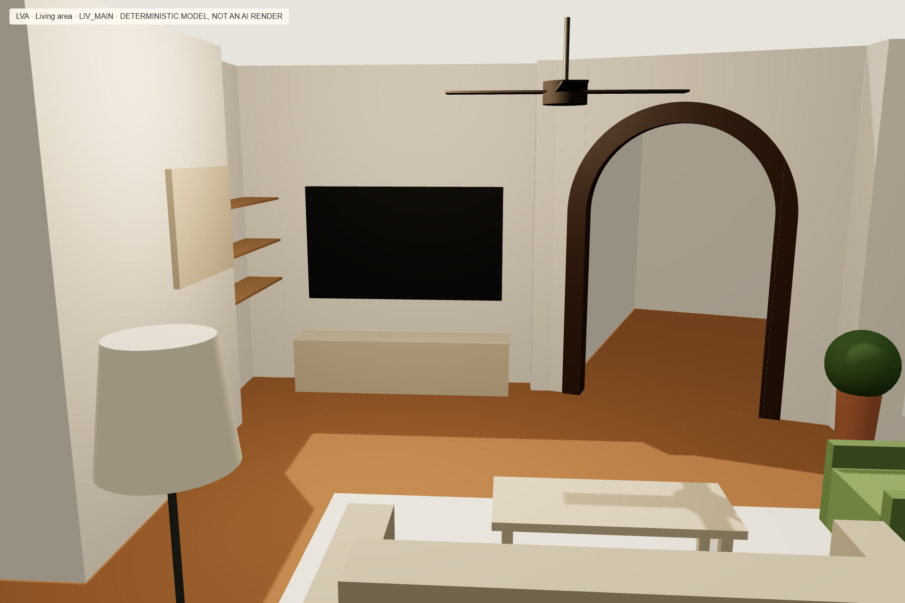

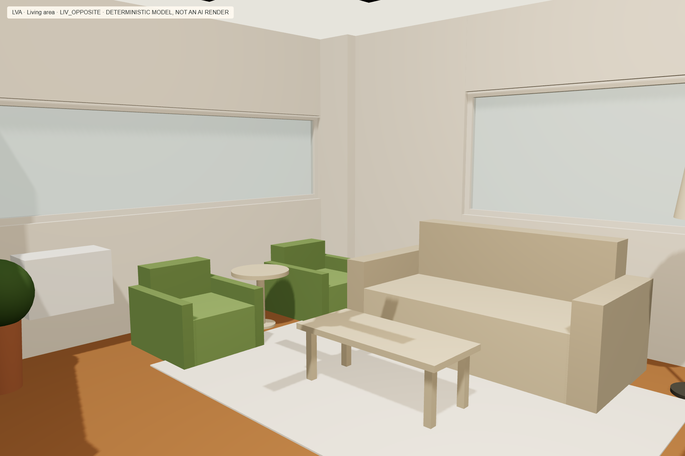

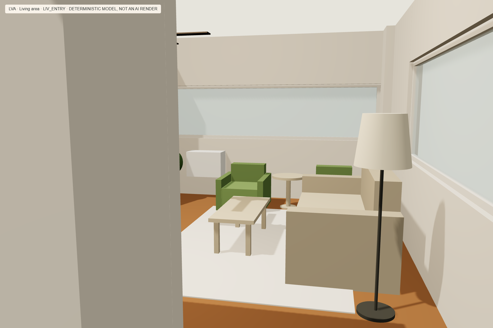

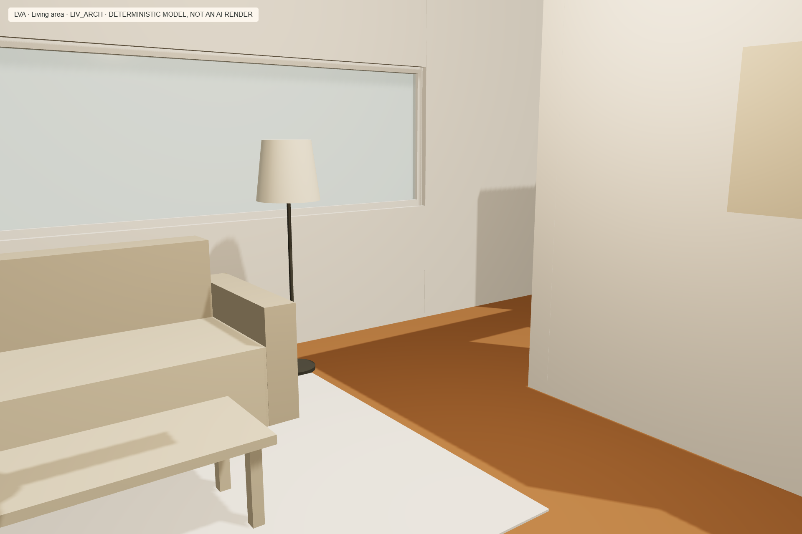
Model views are deterministic Three.js views of the audited Unit 408 shell (parquet, curtains, window, doors, closet, 75 in TV, new split AC) with the selected pieces as proxy forms at published or assumed sizes and the rug and art photos mapped to their rectangles; not AI renders, finishes approximate.
The reference board contains supplier product photographs.

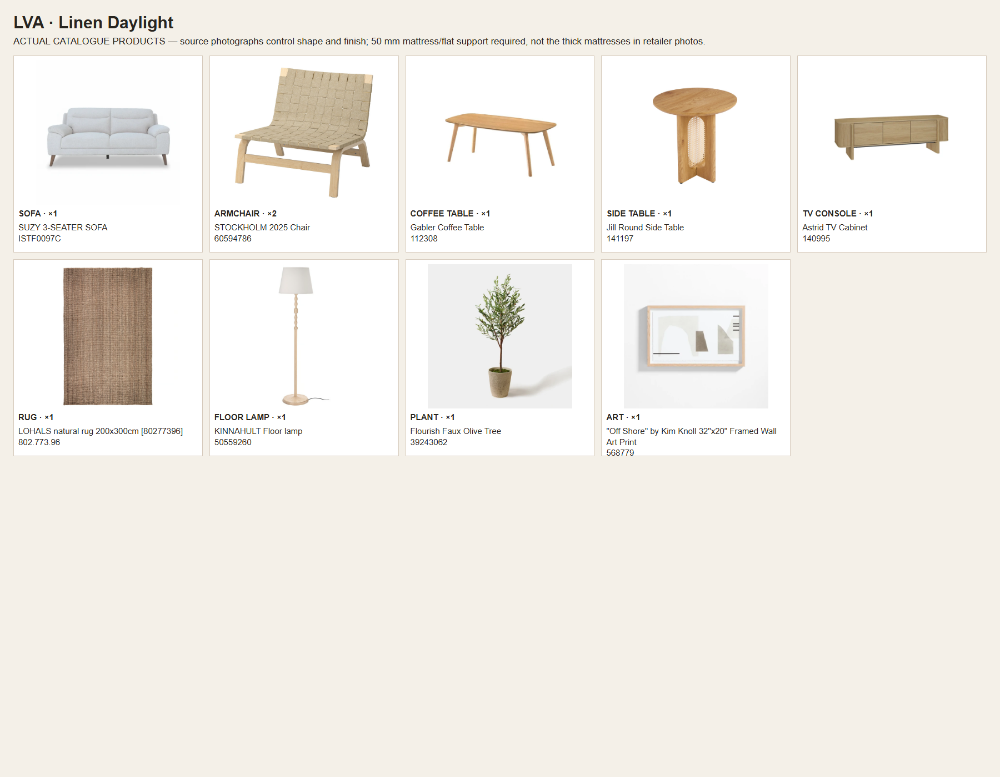

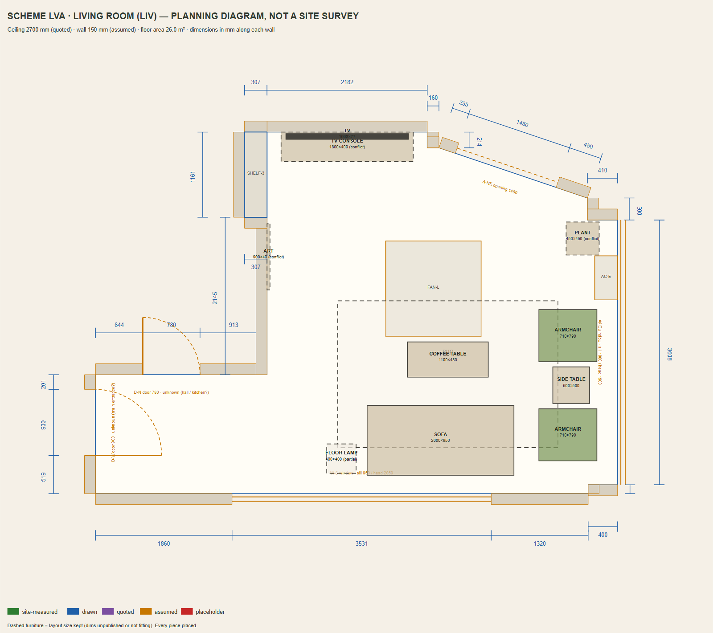
Space & fit
- Seating option A: 3-seater along the south window facing the TV, two woven armchairs along the east window south of the window AC with a side table between them, rug 3400 x 2400 under the group.
- Curtain lines kept: 250 mm behind the sofa and the chairs at both windows; the floor in front of the window AC stays clear.
- Conditional fit: the living is not site-measured; ceiling, sills, heads, door heights and the fan and AC positions are assumed (see ASSUMED.md) and every plan and view depends on them until taped.
Every scheduled itemDirection LVA · selected pieces9 rows
9 scheduled items
| Starred | Piece & exact variant | Qty / scheme | Unit price | Line price | Source & fulfillment |
|---|---|---|---|---|---|
sofaSUZY 3-SEATER SOFABeige; SKU ISTF0097C Dimensions & source notesDimensions (mm): width: 2000; depth: 950; height: 920 Notes: Cool ivory/beige fabric 3-seater with slim tapered timber legs, 2000 x 950, in stock; budget alternate with a softer, less linen texture. Alternate: BoConcept Aarhus 3-seater sofa (PHP 282,690). Price basis: catalogue |
1LVA | ₱41,950Source price: 2026-10-20 | ₱41,950 | Catalogue export 20 Oct 2026 | availability available | Cebu delivery unconfirmedSupplier page ↗ | |
armchairSTOCKHOLM 2025 ChairSTOCKHOLM 2025 Chair, birch veneer; article 60594786 Dimensions & source notesDimensions (mm): width: 710; depth: 790; height: 630 Notes: Woven natural linen webbing on a birch frame, 710 x 790: the cane/linen/pale-oak accent in one piece; low lounge chair, buy x2. Alternate: Mandaue Foam Alexia Accent Chair (PHP 12,200). Materials as published: Fabric: 100 % linen, 100 % linen, 100 % linen; Seat side/ Leg: Layer-glued wood veneer, Birch veneer, Clear acrylic lacquer. Price basis: catalogue |
2LVA | ₱17,999Source price: 2026-10-20 | ₱35,998 | Catalogue export 20 Oct 2026 | availability available | Cebu delivery unconfirmedSupplier page ↗ | |
coffee tableGabler Coffee TableNatural; SKU 112308 Dimensions & source notesDimensions (mm): width: 1100; depth: 480; height: 400 Notes: Simple pale-oak veneer top on tapered rubberwood legs, low and slim at 1100 mm; keeps the linen-and-oak daylight look quiet. Alternate: abensonHome Misha Center Table (PHP 4,395). Materials as published: Table top: MDF with veneer Legs: Rubberwood. Price basis: catalogue |
1LVA | ₱5,600Source price: 2026-10-20 | ₱5,600 | Catalogue export 20 Oct 2026 | availability available | Cebu delivery unconfirmedSupplier page ↗ | |
side tableJill Round Side TableSingle published variant; SKU 141197 Dimensions & source notesDimensions (mm): width: 500; depth: 500; height: 500 Notes: Round 500 mm light-timber top on a woven-rattan base; exact cane-and-pale-wood note for the daylight room. Alternate: Philux Renzo Pedestal (PHP 47,500). Materials as published: 25mm MDF board with paper Table top + MDF board with paper w/ PVC woven rattan legs. Price basis: catalogue |
1LVA | ₱4,400Source price: 2026-10-20 | ₱4,400 | Catalogue export 20 Oct 2026 | availability catalog listed | Cebu delivery unconfirmedSupplier page ↗ | |
tv consoleAstrid TV CabinetSKU 140995; Oak Dimensions & source notesDimensions (mm): width: 1600; depth: 420; height: 495 Notes: Light-oak finish cabinet with three panel doors and rounded ends, 1600 wide; fits the pale-oak, linen scheme (shorter than the 1800 slot, so 100 mm clear each side). Alternate: abensonHome Valerie TV Cabinet (PHP 5,995). Materials as published: 15mm thick MDF w/melamine top , bottom & shelf 38mm thick Hollow board in paper finish side. Price basis: catalogue |
1LVA | ₱8,700Source price: 2026-10-20 | ₱8,700 | Catalogue export 20 Oct 2026 | availability sold out | Cebu delivery unconfirmedSupplier page ↗ | |
![Supplier photograph: LOHALS natural rug 200x300cm [80277396]](assets/products/LVA-RUG.avif) rugLOHALS natural rug 200x300cm [80277396]LOHALS Rug, flatwoven - natural 200x300 cm; natural; 200x300cm; SKU 802.773.96 Dimensions & source notesDimensions (mm): width: 2000; depth: 3000 Notes: Natural jute flatweave in the right 2000 x 3000 class; warms the oatmeal linen and light oak, and the sage comes from plant and cushion (no priced in-range rug carries a green border). Alternate: BoConcept Calm Whisper rug (PHP 101,890). Materials as published: 100% jute. Backing: unpublished. Price basis: catalogue |
1LVA | ₱7,999Source price: 2026-10-20 | ₱7,999 | Catalogue export 20 Oct 2026 | availability verify | Cebu delivery unconfirmedSupplier page ↗ | |
 floor lampKINNAHULT Floor lampKINNAHULT Floor lamp, ash/white, 150 cm; article 50559260 Dimensions & source notesDimensions (mm): height: 1500 Notes: Solid ash stem and white shade, 1500 high; light timber at the sofa end for the daylight room. Alternate: BoConcept Drum floor lamp (PHP 92,590). Materials as published: Upper tube/ Lower tube/ Base: Solid ash, Acrylic stain; Shade: 100% polyester (min. 90% recycled); Diffuser: Polystyrene plastic (min. 20% recycled); Shade ring/ Shade holder: Polypropylene; Support bracket/ Frame: Steel, Epoxy/polyester powder coating; Threaded Pin: Steel, Galvanized. Price basis: catalogue |
1LVA | ₱3,999Source price: 2026-10-20 | ₱3,999 | Catalogue export 20 Oct 2026 | availability available | Cebu delivery unconfirmedSupplier page ↗ | |
plantFlourish Faux Olive TreeDefault Title Dimensions & source notesDimensions (mm): width: 1000; depth: 1000; height: 1750 Notes: Faux olive tree 1750 high in a neutral stone-grey planter; the soft sage green accent for the daylight room. Alternate: Flourish Flourish Eucalyptus Tree (PHP 9,539). Price basis: catalogue |
1LVA | ₱11,699.10Source price: 2026-10-20 | ₱11,699.10 | Catalogue export 20 Oct 2026 | availability sold out | Cebu delivery unconfirmedSupplier page ↗ | |
art"Off Shore" by Kim Knoll 32"x20" Framed Wall Art Print"Off Shore" by Kim Knoll 32"x20" Framed Wall Art Print; Single listed configuration; published SKU 568779; Shopify variant 44253412065496 Dimensions & source notesDimensions (mm): width: 812.8; depth: 50.8; height: 508 Notes: Soft linen-toned abstract in a light oak frame, 813 x 508; the timber-frame, quiet-landscape brief. Alternate: Perfect Pieces Perfect Pieces Flourishing Blooms (PHP 8,450). Materials as published: Giclee print on artist paper; Wood frame with light oak finish; Glass. Price basis: catalogue |
1LVA | ₱29,875Source price: 2026-10-20 | ₱29,875 | Catalogue export 20 Oct 2026 | availability available | Cebu delivery unconfirmedSupplier page ↗ |


Direction LVB
Teal and Ochre
a teal sofa with an ottoman chaise, one ochre tub chair, walnut and a cream-and-denim rug under a copper arc lamp: a warm evening room without the usual browns
Style renders are AI images (Codex image generation, sketch-to-render) painted over the dimension-led model views below, with the original parquet photo and the supplier product photos as references: a style interpretation of each scheme, not a dimension certification; check every piece against the schedule.

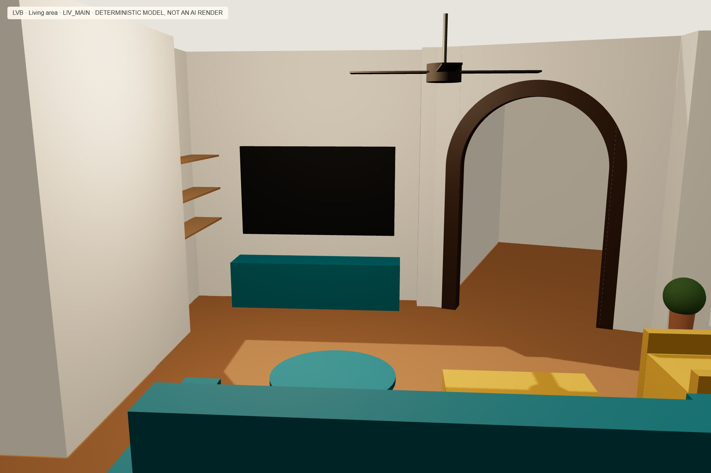

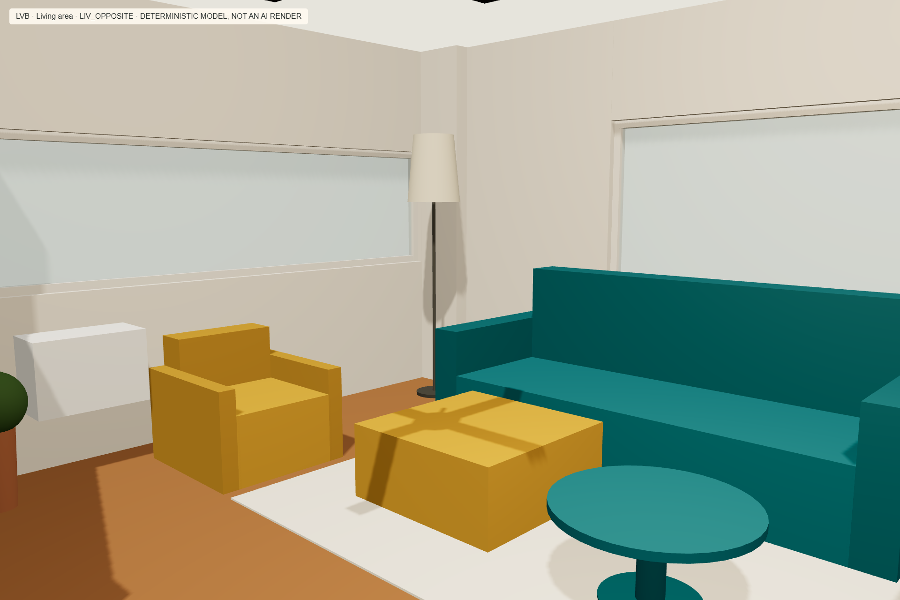

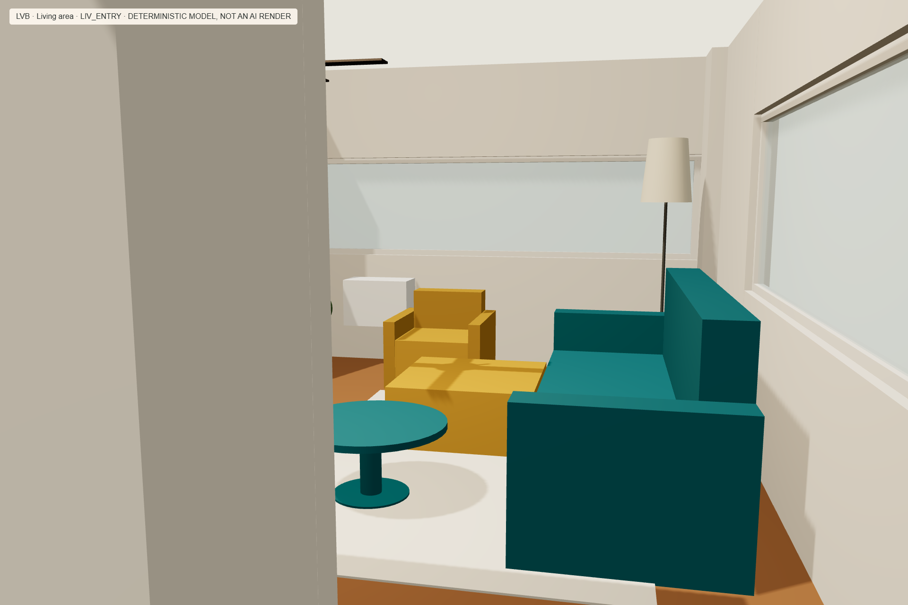

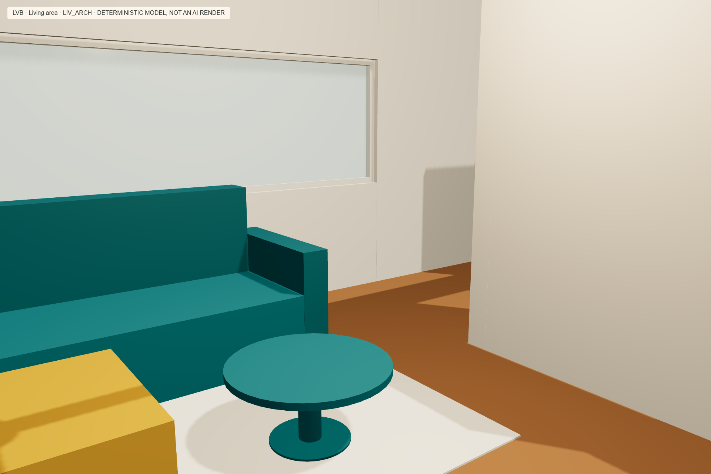
Model views are deterministic Three.js views of the audited Unit 408 shell (parquet, curtains, window, doors, closet, 75 in TV, new split AC) with the selected pieces as proxy forms at published or assumed sizes and the rug and art photos mapped to their rectangles; not AI renders, finishes approximate.
The reference board contains supplier product photographs.

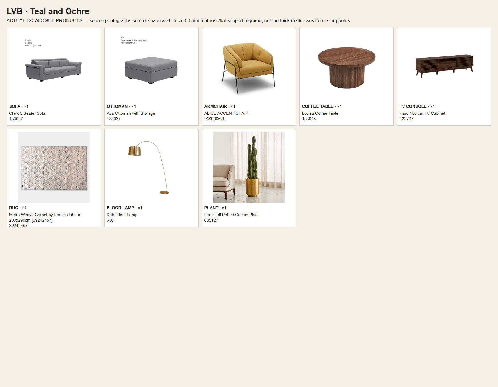

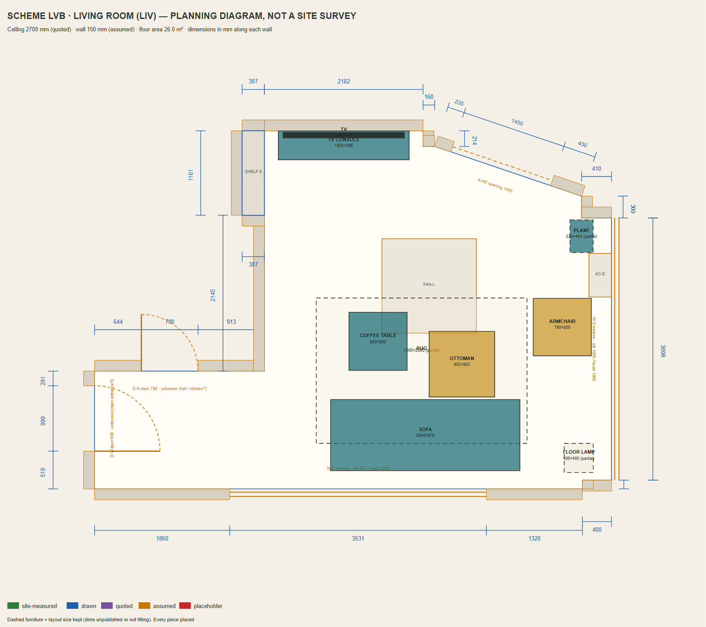
Space & fit
- Seating option B: 3-seater along the south window with the ottoman at its east end as the chaise, round walnut coffee table in front of its west half, one tub armchair by the east window south of the window AC.
- The ottoman and sofa are two SKUs, so the layout engine places both; together they read as a sectional with a chaise.
- Conditional fit: the living is not site-measured; ceiling, sills, heads, door heights and the fan and AC positions are assumed (see ASSUMED.md) and every plan and view depends on them until taped.
Every scheduled itemDirection LVB · selected pieces8 rows
8 scheduled items
| Starred | Piece & exact variant | Qty / scheme | Unit price | Line price | Source & fulfillment |
|---|---|---|---|---|---|
sofaClark 3 Seater SofaFabric Belfast Light Teal (published option; listing photo shows Parson Light Gray) Dimensions & source notesDimensions (mm): width: 2604; depth: 979; height: 1060 Notes: Straight 3-seater 2604 x 979 ordered in the Belfast Light Teal fabric option (the listing photo shows Light Gray): pairs with the ottoman as the chaise so no second chaise appears; the catalogue has no straight navy or teal sofa of this size in stock under PHP 400k. Alternate: IKEA EKTORP Sofa with chaise (PHP 39,999); BoConcept Carlton sofa (PHP 410,990). Materials as published: Frame: Plywood panel with Gemelina Fixed Seat Cushion: Flex foam Fixed Back Cushion: Syntex foam & Unisoft foam. Price basis: catalogue |
1LVB | ₱41,300Source price: 2026-10-20 | ₱41,300 | Catalogue export 20 Oct 2026 | availability catalog listed | Cebu delivery unconfirmedSupplier page ↗ | |
ottomanAva Ottoman with StorageCarbon (published option; listing photo shows Parson Light Gray) Dimensions & source notesDimensions (mm): width: 902; depth: 902; height: 396 Notes: Square storage ottoman 902 x 902 x 396 in mid grey fabric (supplier label Parson Light Gray, Carbon is a published option, so confirm the colour); budget alternate, not a true dark grey. Alternate: BoConcept Carlton footstool (PHP 148,490). Materials as published: Frame: Plywood & Gemelina wood Fixed Seat: Polyurethane foam Fabric: 100% Polyester Leg: Plastic Leg. Price basis: catalogue |
1LVB | ₱11,900Source price: 2026-10-20 | ₱11,900 | Catalogue export 20 Oct 2026 | availability catalog listed | Cebu delivery unconfirmedSupplier page ↗ | |
armchairALICE ACCENT CHAIRYellow (published option; listing variant is Light Grey) Dimensions & source notesDimensions (mm): width: 790; depth: 800; height: 730 Notes: Mustard/ochre fabric tub-shell armchair on black metal legs, 790 x 800 x 730; fixed, not swivel; the listing variant is Light Grey but Yellow is a published colour, so confirm the colour at purchase; catalogue-listed. Materials as published: fabric kiln-dried wood high-density foam metal legs. Price basis: catalogue |
1LVB | ₱29,950Source price: 2026-10-20 | ₱29,950 | Catalogue export 20 Oct 2026 | availability catalog listed | Cebu delivery unconfirmedSupplier page ↗ | |
coffee tableLovisa Coffee TableSingle published variant; SKU 133945 Dimensions & source notesDimensions (mm): width: 800; depth: 800; height: 400 Notes: Round 800 mm walnut-tone drum with a fluted base; matches the walnut round-table brief for the cognac lounge. Alternate: Mandaue Foam Cassidy Coffee Table (PHP 5,075). Materials as published: 36mm thick MDF with paper laminate table top+ 5mm thick Corrugated MDF with paper laminate base. Price basis: catalogue |
1LVB | ₱7,000Source price: 2026-10-20 | ₱7,000 | Catalogue export 20 Oct 2026 | availability available | Cebu delivery unconfirmedSupplier page ↗ | |
tv consoleHaru 180 cm TV CabinetColumbia; SKU 122707 Dimensions & source notesDimensions (mm): width: 1800; depth: 396; height: 494 Notes: Walnut-brown 1800 mm cabinet with ribbed slatted doors and splayed legs; fills the console slot and gives the walnut role. Alternate: BLIMS Fine Furniture SCARLETT TV CABINET (PHP 27,950). Materials as published: Panel: Particle board laminated with 3D paper lamination Apron & legs: MDF in paper lamination. Price basis: catalogue |
1LVB | ₱11,500Source price: 2026-10-20 | ₱11,500 | Catalogue export 20 Oct 2026 | availability available | Cebu delivery unconfirmedSupplier page ↗ | |
rugMetro Weave Carpet by Francis Libiran 200x290cm [39242457]Metro Weave Carpet by Francis Libiran; No named color variant published; confirm actual sample; 200x290cm; SKU 39242457 Dimensions & source notesDimensions (mm): width: 2000; depth: 2900 Notes: Cream-blush ground with a denim-blue diamond lattice, 2000 x 2900; the blue echoes the indigo sofa, no rust or orange. Alternate: BoConcept Meadow Hue rug (PHP 129,590). Materials as published: 100% heatset and shrink polyester. Backing: Unpublished. Price basis: catalogue |
1LVB | ₱35,995.50Source price: 2026-10-20 | ₱35,995.50 | Catalogue export 20 Oct 2026 | availability available | Cebu delivery unconfirmedSupplier page ↗ | |
floor lampKuta Floor LampKuta Floor Lamp; outlet SKU 630; Brushed Copper Finish; representative listing https://www.boconcept.com/en-ph/outlet/lamps/731902f9-a88e-4ffe-bbc5-1c558d43cfe3/ Dimensions & source notesDimensions (mm): height: 2000 Notes: Brushed-copper arc with a dome shade, 2000 high; reaches over the chaise and sits warm against cognac and walnut. Alternate: IKEA SKOTTORP / SKAFTET Floor lamp, arched (PHP 4,899). Materials as published: Brushed Copper Finish. Price basis: catalogue |
1LVB | ₱46,848Source price: 2026-10-20 | ₱46,848 | Catalogue export 20 Oct 2026 | availability available | Cebu delivery unconfirmedSupplier page ↗ | |
plantFaux Tall Potted Cactus PlantFaux Tall Potted Cactus Plant; Single listed configuration; published SKU 605127; Shopify variant 44187554873560 Dimensions & source notesDimensions (mm): width: 320.04; height: 1358.9 Notes: Faux tall potted cactus 1359 high in a brass planter; sculptural green with a warm metal pot (planter is brass, not dark). Alternate: Ashley A54200037 Greenery (PHP 11,200). Materials as published: Plastic, polyfoam, iron wire. Price basis: catalogue |
1LVB | ₱10,845Source price: 2026-10-20 | ₱10,845 | Catalogue export 20 Oct 2026 | availability available | Cebu delivery unconfirmedSupplier page ↗ |


Direction LVC
Charcoal and Brass
two charcoal 2-seaters in an L, brass as the single metal, marble and glass on ivory-grey, art on the notch wall
Style renders are AI images (Codex image generation, sketch-to-render) painted over the dimension-led model views below, with the original parquet photo and the supplier product photos as references: a style interpretation of each scheme, not a dimension certification; check every piece against the schedule.

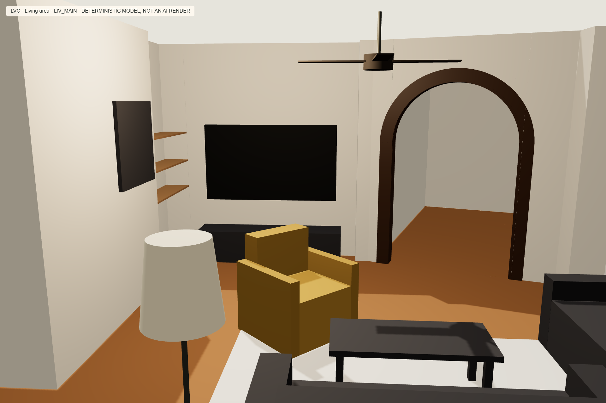

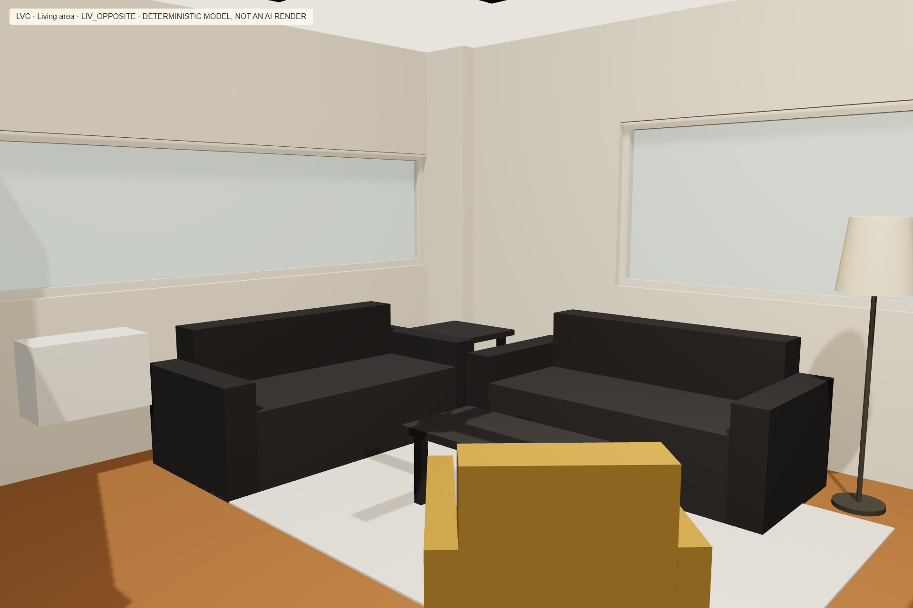

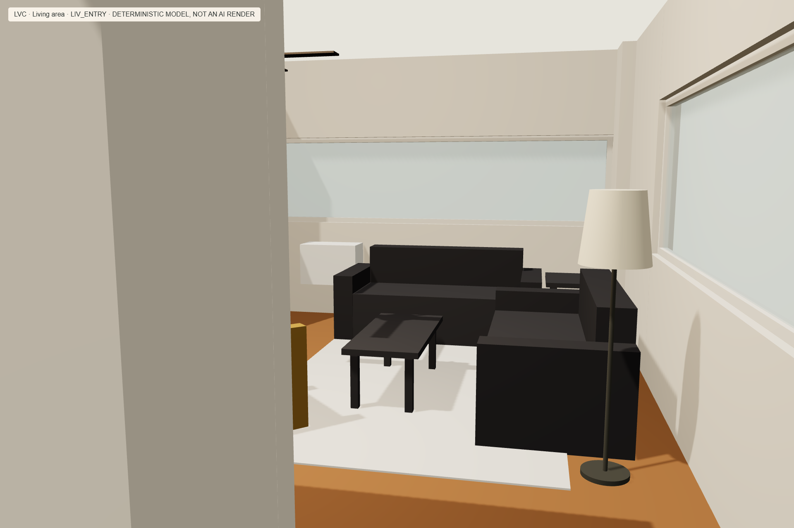

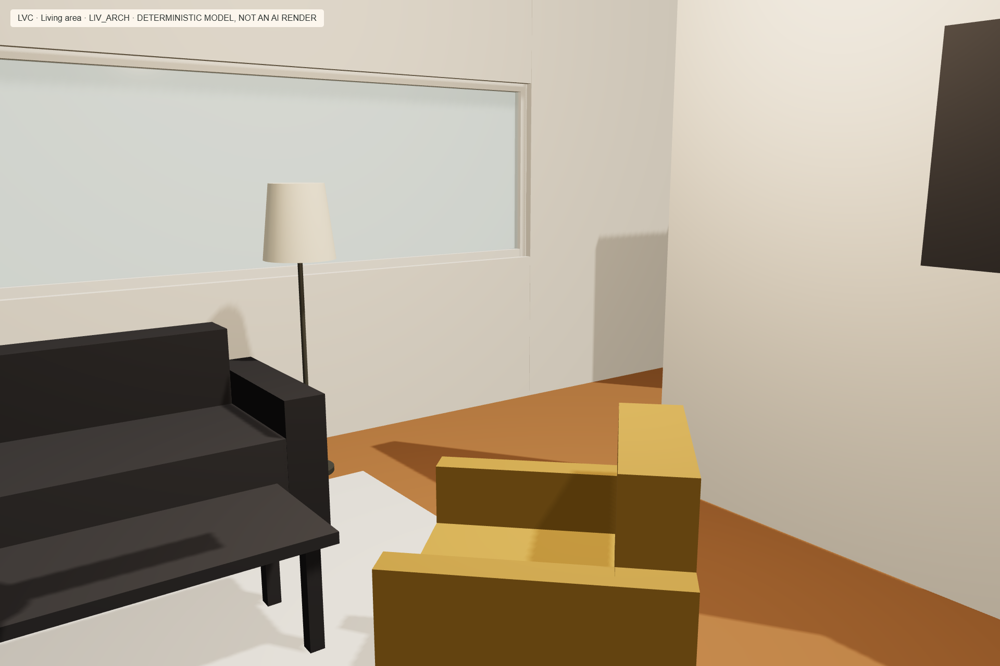
Model views are deterministic Three.js views of the audited Unit 408 shell (parquet, curtains, window, doors, closet, 75 in TV, new split AC) with the selected pieces as proxy forms at published or assumed sizes and the rug and art photos mapped to their rectangles; not AI renders, finishes approximate.
The reference board contains supplier product photographs.

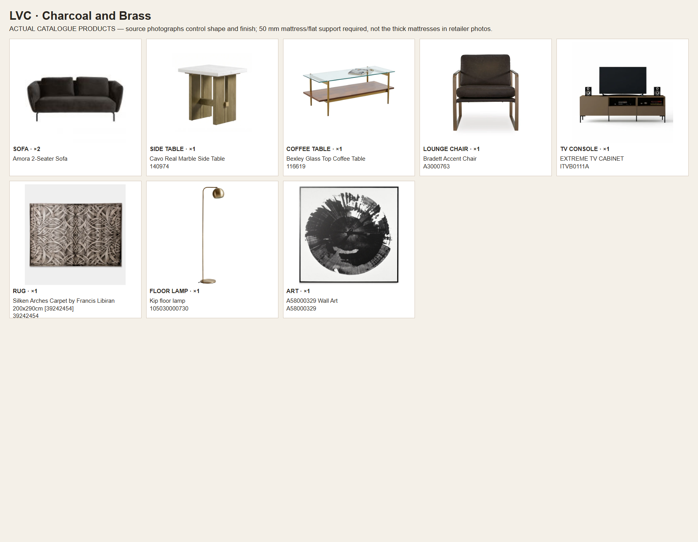

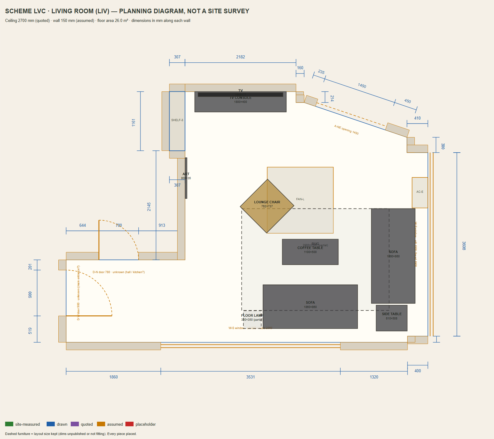
Space & fit
- Seating option C: one 2-seater along the south window, one along the east window south of the window AC, corner table in the south-east corner, lounge chair on the TV-wall side of the rug.
- The lounge chair stays 1000 mm off the TV console front so the bay-to-arch walkway holds.
- Conditional fit: the living is not site-measured; ceiling, sills, heads, door heights and the fan and AC positions are assumed (see ASSUMED.md) and every plan and view depends on them until taped.
Every scheduled itemDirection LVC · selected pieces8 rows
8 scheduled items
| Starred | Piece & exact variant | Qty / scheme | Unit price | Line price | Source & fulfillment |
|---|---|---|---|---|---|
sofaAmora 2-Seater SofaPolyester, Grey, No-Zag Springs, Comfortable Dimensions & source notesDimensions (mm): width: 1860; depth: 860; height: 800 Notes: Charcoal plush-velvet look 2-seater with rounded tidy arms and slim black metal legs, 1860 x 860; photo reads near-black, listing says Grey; buy x2. Alternate: abensonHome Jacob 3-Seater Sofa (PHP 31,995). Price basis: catalogue |
2LVC | ₱32,805Source price: 2026-10-20 | ₱65,610 | Catalogue export 20 Oct 2026 | availability available | Cebu delivery unconfirmedSupplier page ↗ | |
side tableCavo Real Marble Side TableSingle published variant; SKU 140974 Dimensions & source notesDimensions (mm): width: 610; depth: 508; height: 588 Notes: Real marble top on brass-toned legs, 610 x 508 x 588 mm; the marble-and-brass corner table the contrast room asks for. Alternate: Urban Concepts Tanya Side Table (PHP 14,360). Materials as published: 35mm thick real marble top+ MDF legs in lacquered finish. Price basis: catalogue |
1LVC | ₱12,200Source price: 2026-10-20 | ₱12,200 | Catalogue export 20 Oct 2026 | availability catalog listed | Cebu delivery unconfirmedSupplier page ↗ | |
coffee tableBexley Glass Top Coffee TableSingle published variant; SKU 116619 Dimensions & source notesDimensions (mm): width: 1100; depth: 500; height: 420 Notes: Glass top on a gold-finish tube frame with a timber shelf, 1100 mm; airy marble/glass-on-brass fit for the contrast room. Alternate: Furniture Manila Cascade Oval Center Table: White Marble-Look Top (PHP 4,750). Materials as published: Table top: 8 mm Tempered Glass Frame: Ø22 mm & 15 x 30 mm in 0.9 mm thick metal tube Panel: 18 mm thick MDF board laminated with melamine. Price basis: catalogue |
1LVC | ₱6,350Source price: 2026-10-20 | ₱6,350 | Catalogue export 20 Oct 2026 | availability catalog listed | Cebu delivery unconfirmedSupplier page ↗ | |
lounge chairBradett Accent ChairBradett Accent Chair; manufacturer SKU A3000763; Default Title Dimensions & source notesDimensions (mm): width: 762; depth: 736.6; height: 863.6 Notes: Near-black espresso leather-look seat with a brass-bronze metal frame, 762 x 737: low open profile and the brass ties to the scheme; colour is very dark brown, not true black. Alternate: Crate & Barrel Le Marché Blue Accent Chair by Athena Calderone (PHP 99,990). Materials as published: metal frame. Price basis: catalogue |
1LVC | ₱65,500Source price: 2026-10-20 | ₱65,500 | Catalogue export 20 Oct 2026 | availability available | Cebu delivery unconfirmedSupplier page ↗ | |
tv consoleEXTREME TV CABINETDefault published variant; SKU ITVB0111A Dimensions & source notesDimensions (mm): width: 1800; depth: 400; height: 400 Notes: Dark taupe-bronze (greige-graphite) body on black legs with black open bays, full 1800 mm, low at 400; no light wood, bronze tone sits with the brass accent. Not true black. Alternate: abensonHome Prym TV Cabinet (PHP 5,995). Materials as published: : Laminated Board, Metal Legs. Price basis: catalogue |
1LVC | ₱24,295Source price: 2026-10-20 | ₱24,295 | Catalogue export 20 Oct 2026 | availability available | Cebu delivery unconfirmedSupplier page ↗ | |
rugSilken Arches Carpet by Francis Libiran 200x290cm [39242454]Silken Arches Carpet by Francis Libiran; No named color variant published; confirm actual sample; 200x290cm; SKU 39242454 Dimensions & source notesDimensions (mm): width: 2000; depth: 2900 Notes: Ivory-grey ground with charcoal interlaced-arch geometry, 2000 x 2900; the exact charcoal-geometry brief. Alternate: BoConcept Angled Muse rug (PHP 101,890). Materials as published: 100% heatset polypropylene. Backing: Unpublished. Price basis: catalogue |
1LVC | ₱35,995.50Source price: 2026-10-20 | ₱35,995.50 | Catalogue export 20 Oct 2026 | availability available | Cebu delivery unconfirmedSupplier page ↗ | |
floor lampKip floor lampKip floor lamp; manufacturer variant/SKU 105030000730; master 105030000730; selected configuration codes: vaMaterialLamp=81 Dimensions & source notesDimensions (mm): height: 1460 Notes: Slim brass-toned stem with a small dome head, 1460 high; the single brass lamp behind the lounge chair. Alternate: IKEA ÅRSTID Floor lamp (PHP 2,499). Materials as published: Published material groups: Metal. Price basis: catalogue |
1LVC | ₱59,990Source price: 2026-10-20 | ₱59,990 | Catalogue export 20 Oct 2026 | availability catalog listed | Cebu delivery unconfirmedSupplier page ↗ | |
artA58000329 Wall ArtA58000329 Wall Art; manufacturer SKU A58000329; Default Title; Black/White Dimensions & source notesDimensions (mm): width: 800.1; depth: 34.798; height: 800.1 Notes: Charcoal-black ink circle on ivory in a black frame, 800 x 800; strong contrast on the notch wall. Alternate: Ashley A58000471 Wall Art (PHP 13,000). Materials as published: Made with canvas. Price basis: catalogue |
1LVC | ₱5,800Source price: 2026-10-20 | ₱5,800 | Catalogue export 20 Oct 2026 | availability available | Cebu delivery unconfirmedSupplier page ↗ |


Your shortlist
Starred pieces
Star ☆ any piece in the schedules above and it is listed here by direction with a running total. Stars are saved in this browser only. Use Copy link to send them to someone else (the link opens with the same stars) or Copy as text for a message.
No starred pieces yet.
Plain-text list
Compare the complete plan
Budgets, with the open costs visible
Quoted work and fulfillment remain unresolved. The planning ranges include the allowances below, plus 10% contingency, rounded up to ₱1,000.
| Per chosen scheme | LVALinen Daylight | LVBTeal and Ochre | LVCCharcoal and Brass |
|---|---|---|---|
| Selected design pieces | ₱150,220.10 | ₱195,338.50 | ₱275,740.50 |
| Common essentials & room treatments | ₱0 | ₱0 | ₱0 |
| Priced schedule subtotal | ₱150,220.10 | ₱195,338.50 | ₱275,740.50 |
| Working planning range | ₱182,000 to ₱206,000 | ₱232,000 to ₱256,000 | ₱320,000 to ₱345,000 |
Planning allowances ₱15,000–₱37,000 before contingency
| Work or provision | Low | High | Basis & limits |
|---|---|---|---|
| Cebu freight, delivery and handling | ₱5,000 | ₱15,000 | Planning allowance only; no shipping rates/address allocation obtained. Overseas freight not included. |
| TV/art/pendant installation and assembly | ₱5,000 | ₱10,000 | Planning allowance only; installer must specify anchors and verify substrate. Includes no structural rebuilding. |
| Paint touch-up and site coordination | ₱5,000 | ₱12,000 | Estimator reserve, not a contractor quote. |
Shared foundations
Common essentials & fixed room treatments
The fixed curtains and listed technical essentials are common room provisions. Scheme letters show where each row applies; quantities are per chosen scheme.
Every scheduled itemCommon room schedule0 rows
0 scheduled items
| Starred | Piece & exact variant | Qty / scheme | Unit price | Line price | Source & fulfillment |
|---|
Before ordering
Resolve these procurement gates
- Prices are catalogue references with each line's own price date. Product existence and photos are verified; exact Cebu stock, address delivery and checkout totals are not.
- Pieces flagged "dims unpublished" in the room placement report keep the layout size; measure them at the showroom before ordering.
- Delivery path for the sofa, dining table and buffet (lift, corridor, door widths) to be confirmed with the building before ordering.
- Style renders are AI interpretations painted over the dimension-led model views; supplier photo boards, measured plans and the item schedule are the acceptance basis.
Source notes
- Pieces come from the frozen 20 Oct 2026 catalogue export (prices as published that day); photos are the suppliers' own.
- Room geometry: owner-drawn plan plus Jamaica's 22 Oct photos; the living is not site-measured (tape items T1-T7 pending), see ASSUMED.md.
- Curtains per the Seoul quote (Davies Beige blackout + voile, full length) are not priced in these sets; the TV is a technical slot, not a line item.
- Where a supplier lists one colour variant but publishes others (Alice yellow, Ava carbon), the notes say which to confirm at purchase.